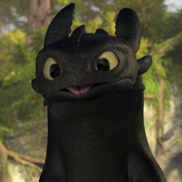

Toothless, The Night Fury
Contact
🐉 Isle of Berk | 📧 toothless@dragonmail.com | 📞 (555) DRG-FIRE | 🦴
LinkedIn.com/in/NightFurySupreme

Objective
- To secure a position where I can leverage my stealth, firepower, and irresistible charm to strengthen dragon–human relations, protect fish supplies (for personal reasons), and occasionally save the world.
- Seeking opportunities that involve high-speed flight, teamwork with awkward Vikings, and generous snack breaks.
Skills
🔥 Dragonfire Precision: Can toast a fish, a bad guy, or Hiccup’s pants—on command (…well, most of the time).
✈️ High-Speed Flight: Capable of Mach 2 zoomies with advanced aerial barrel rolls.
🦷 Silent but Deadly: No roar until I decide—perfect for stealth missions.
🤝 Cross-Species Communication: Fluent in growls, chirps, headbutts, and the occasional tail slap.
🎭 Expressive Facial Acting: Can convey sarcasm, sass, and “feed me” with a single look.
Education
- Degree: Advanced Dragoning with a concentration in “How Not to Get Killed by Vikings”
- Honors: First dragon to achieve Human–Dragon Co-Leadership Certification
Experience
Co-Alpha of the Dragon World
Isle of Berk | 2014–Present
- Partnered with Hiccup to manage dragon–human relations, occasionally saving the world (no big deal).
- Successfully led dragon evacuations, earning a 100% survival rate (except that one sheep incident, but we don’t talk about it).
- Balanced leadership with important hobbies such as napping, playing fetch, and pretending to be a cat.
Freelance Fish Hunter
Oceans of Berk | Since birth
- Spearheaded efficient fish procurement techniques with zero fishing pole usage.
- Consistently met daily fish quotas, often ahead of schedule.
- Recognized for “Most Fish Consumed in a Single Sitting.”
References
- Hiccup Horrendous Haddock III – Best friend, part-time prosthetic engineer, full-time dragon wrangler.
- Astrid Hofferson – Occasional flying coach, perpetual eye-roller.
- Stoick (RIP) – Once yelled “Good dragon!” and that still counts.
All content © 2025, Toothless and Sophie Patch